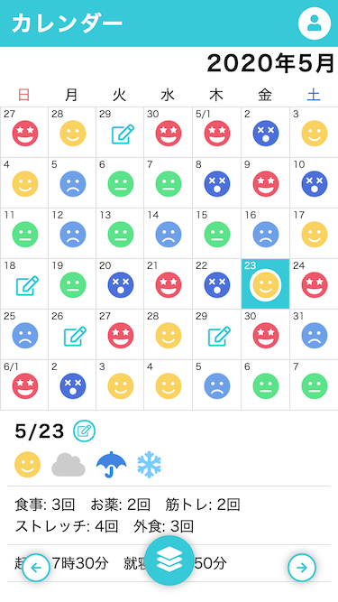

CopyProtectDocumentViewer
知識があれば突破できる程度の簡素なコピープロテクト
→使ってみる
HTML/CSS/JavaScriptがチョットデキル。
TypeScriptもチョットデキル。
React.jsとVue.jsはチョットワカル。
知識があれば突破できる程度の簡素なコピープロテクト
→使ってみるやたらJ-POPに詳しく日本語に堪能なメキシコ人の友達が「漢字の読み方だけは超むずいヨ」と言っていたので日本語の文章にふりがなを打って練習するページを作りました。未完成でバグいです。
→使ってみる任意の日本語を縦書きにするやつです。
→使ってみる単語検索、ANDとかORとかNOTとか履歴とか候補とか色々だるいのでスクレイパーのGUI用としてUI/UXの実証試験的に作ったReact製の何かです。
→使ってみる

日々の体調を記録し振り返るためのWebアプリです。体調・天気・日課のカウンター・就寝起床時刻を入力し、カレンダーやグラフで体調の推移を分析することができます。
→使ってみる
ソースコード2017年にWebフレームワーク品評会のLTで発表したスライドです。内容はWebフロントエンドで扱うライブラリ(React.js, Vue.js)や開発環境で使用するツール(Node.js, npm, babel, Webpack)についての紹介などです。当時は「なんでJavaScriptをコンパイルするの？？」「React.jsって何？？」「フロントエンドはトレンドが変わりすぎで追いつけねえよ……」などと世間で言われている時代でしたねぇ。
→見てみる作ったゲームを置いていくページを新設しました。たくさんゲームを作って充実させていきたいな。
→見てみる